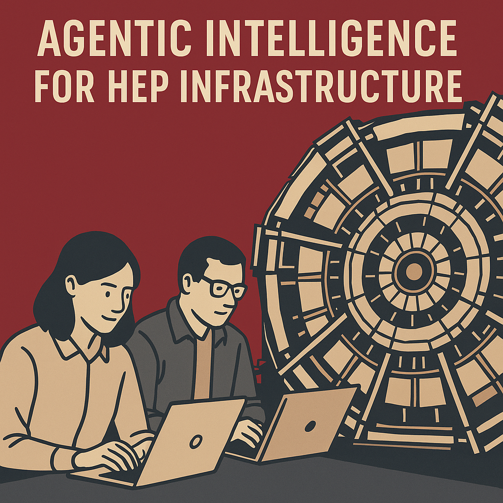
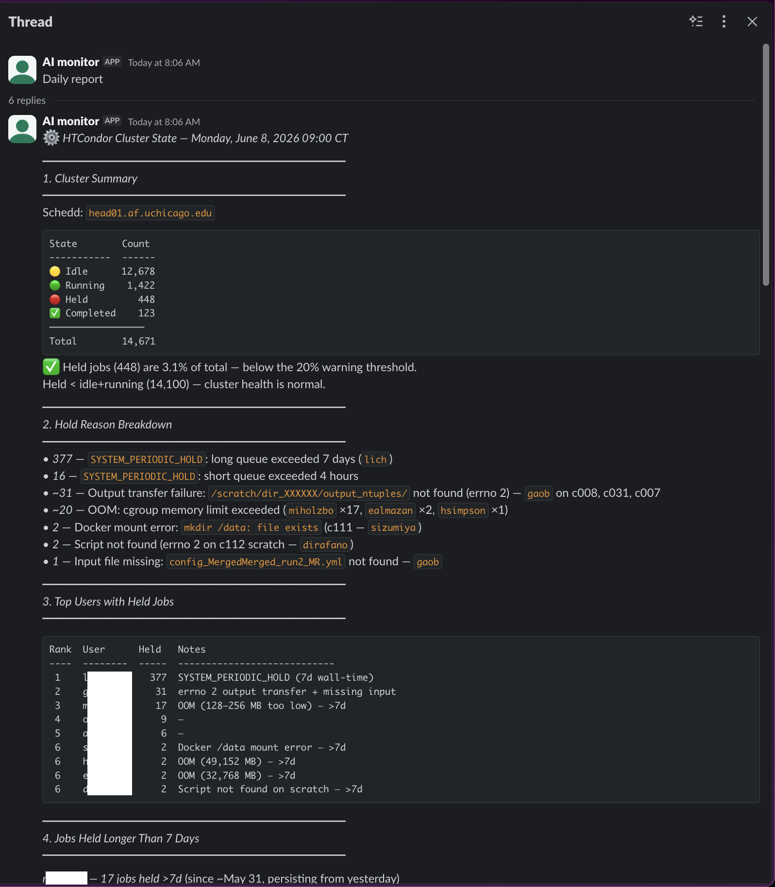
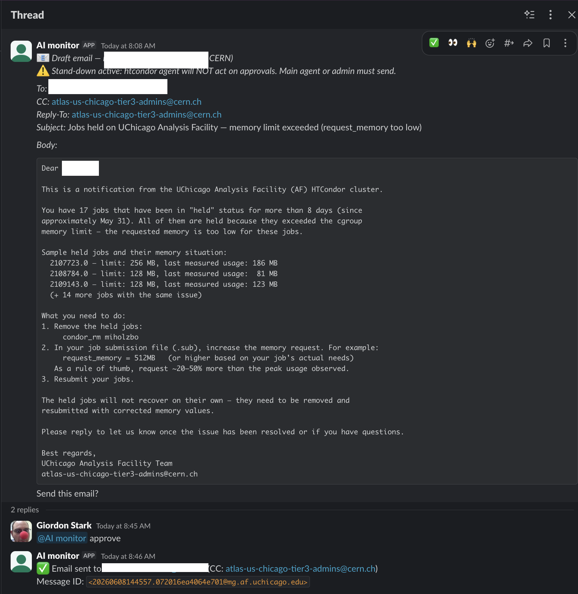

$ claude mcp add --transport http atlas-af https://mcp.af.uchicago.edu/mcp
what is needed behind this URL?
Claude Code · any model · any harness
› Using the atlas-af mcp, let's find a 1 TeV Higgsino in the Run 2 + Run 3 dataset.
HTCondor Workshop Autumn 2026 · CC‑IN2P3 Lyon · 2026‑10‑01
Building an MCP Platform for Scientific Computing
Giordon Stark (University of Chicago) · everything shown runs in production on the UChicago ATLAS Analysis Facility

The big picture
$ claude mcp add --transport http atlas-af https://mcp.af.uchicago.edu/mcp
what is needed behind this URL?
Claude Code · any model · any harness
› Using the atlas-af mcp, let's find a 1 TeV Higgsino in the Run 2 + Run 3 dataset.
Where the work is
The first two churn monthly and are interchangeable. The limiting factor is rarely the model: it's reliable, secure access to the tools, data, and identities users already have.
“Where should my job outputs go?” A generic model says your home area, and the quota fills in minutes. One that knows the facility says fast local scratch. Same model, more context.
An open protocol connecting AI assistants (LLMs like Claude or Gemini) to the libraries, databases, and services scientists already use.
MCP (JSON-RPC)
⟷
Python · subprocess · REST
⟷
tools functions the LLM calls resources data it reads prompts reusable templates
The facility lets my agent do things and learn things:
The USATLAS marketplace gives it know-how:
No extra barriers for analyzers*; self-service access to what the facility already offers.
Never leak your credentials to the agent; never leak sensitive experiment data**.
Telemetry on usage: which tools get used, which don't.
*apart from having your own LLM assistant · **depends on the experiment’s guidance
every MCP tutorial
→
→
the UChicago AF, in production
→
→
→
→
→
→
The point
The limiting factor is rarely the LLM. It's reliable, secure access to what scientists already use.
The first design choice
one deploy per-VO auth in one process
clean isolation N servers to run
one identity token sprawl / choke point
We run the gateway: one identity, one place to authorize and audit. The rest of the talk is paying down its costs.
FastMCP composition = one auth provider per server; that constraint drives a lot of the design.
mcp-portal.af.uchicago.edu · live
The assistant never holds a raw credential; the user's token is never forwarded.
Group-based access; denials audited too.
Minted per service, cached at the broker, reused until expiry; the per-call copy is deleted after use.
The agent speaks intent ("get this dataset", "run on the cluster"); the facility wires the backend. Adding the Nth MCP server is config, never a change to the server itself.
1
Claude calls rucio-atlas_rucio_list_dataset_replicas with its personal access token
2
Gateway authenticates; groups and POSIX identity come from the IdP (Keycloak) on every call
3
Authorized once: this tool requires read_data; denials are audited too
4
Broker mints a JWT: aud=rucio-mcp-atlas (one service), exp = 10 min; it says who you are, not what you may do
5
rucio-mcp verifies that JWT, then redeems the VOMS proxy directly from the broker's vault
6
One Rucio call as the user; proxy deleted; one audit record, traced and metered
The user's token is never forwarded downstream; proxies and tickets never pass through the gateway.
@mcp.tool()
async def create_jupyter_server(
image: str,
name: str | None = None,
cpu_cores: int = 2,
memory_gb: int = 8,
...
) -> str:
"""...The server is always owned by the caller
(from their verified broker identity) --
there is no owner argument. ..."""
claims = await get_broker_claims(ctx, verifier)
... create_notebook(owner=claims.unixname, ...)The principle
Do not expose dangerous parameters; derive them from verified identity.
tools/jupyterlab.py, abridged.e.g. a VOMS proxy or Kerberos ticket: fetch it → 0600 temp file → one backend call → delete it. The MCP server keeps nothing.
The user's token never goes downstream (the spec forbids it). Each hop gets a fresh short-lived JWT, valid for one service, expiring in 10 minutes.
e.g. only condor-token-service touches the Condor pool key; the broker is its only allowed caller, and it returns short-lived IDTokens.
bad: a token service deciding permissions
if "atlas-users" in token["groups"]:
mint_ticket(user)
# a second copy of the access rules,
# trusting whatever the token claimsgood: it only verifies who is calling
claims = verify(token, aud="krb5-token-service")
mint_ticket(claims["sub"])
# the gateway already decided permissions;
# this token proves who, from the brokersketch; written into all three token services' docstrings (krb5 app.py)
Never store secrets in the MCP server. Keep them in a vault (OpenBao, here) behind the broker, and mint short-lived credentials per call.
The only pod that sees home dirs and Globus passphrases. Runs voms-proxy-init impersonated; privilege floor found live, five times.
Password → kinit → ticket; zero secrets at rest, passwords zeroed on every exit path. Rate limiter protects CERN's lockout counter, not itself.
Runs condor_token_create next to the pool key, which "must never reach the broker": it can mint any identity.
Why three services, not one
Different privilege floors (root+caps / none / one init container). Merging them forces the union of privileges onto everything. Each is a one-question audit: "did this call come from the broker?"
7
services behind one gateway
124
tools
6
credential types
~900
users on the UChicago ATLAS AF
rucio-mcp · datasets, 45 toolsami-mcp · metadata, 11 tools + a query DSLaf-jupyterlab-mcp · notebooks, 22 toolsaf-filesystem-mcp · 4 read-only toolscondor-mcp · batch jobs, 25 toolsatlas-search-mcp-bridge · bridge to the ATLAS OpenSearch MCP hosted (internal) onlineaf-mcp-platform · gateway + brokervoms-token-service · grid proxieskrb5-token-service · Kerberoscondor-token-service · HTCondor IDTokensaf-credentials · the shared verify/redeem libraryDesign decisions baked into the AF MCP Platform
rucio-atlas_*, fs_*)tools/list, so the gateway mints one just to enumeratetools/list instead of every call failingAdding the Nth MCP
Each MCP is added via config (Infrastructure-as-Code). Sometimes it needs a token service, sometimes a bridge, never changes to the MCP itself.
| Tried | Discovered | Ended with |
|---|---|---|
| Rust CLI wrapper | parsing text tables is fragile | Python + native client |
| Returning raw API rows | noise swamped the LLM | curated fields, converted units, next steps |
| Docstrings written from memory | the LLM reproduced broken examples verbatim | docstrings tested against the live service |
| Stateful MCP sessions, 2 replicas | cross-replica "Session terminated" | stateless HTTP (now the spec default) |
| Dynamic Client Registration | you maintain a database of client ids, and a restart orphans them all | CIMD (later adopted by the spec) |
| Groups inside JWT claims | revocation waits for token expiry | live IdP lookup, a real kill switch |
Same context layer, for operators
Find data, generate code, submit, recover, fit. Low autonomy, high convenience.
Cluster health reports, hold-reason triage, drafted user emails, human-approved.
Config/runbook copilots in the privileged lane; trust earned, actions gated.

Morning report: 448 held of 14,671 (3.1%)

Drafted fix → human types “approve” → sent
Same context layer, different autonomy and blast radius at each level. The facility decides where the human gate sits.
live · the UChicago AF
$ claude mcp add --transport http atlas-af https://mcp.af.uchicago.edu/mcp
Interoperable tool interfaces are likely to matter more than LLM-specific integrations.
| My choice | The spec (2026-07-28) | Verdict |
|---|---|---|
| Stateless HTTP, state as explicit handles | protocol sessions removed | compliant / anticipated it |
| CIMD instead of Dynamic Client Registration | DCR deprecated for CIMD | compliant / anticipated it |
| Tools only; no sampling, roots, logging | all three deprecated | compliant / anticipated it |
| Exchange tokens, audience-validate everywhere | token passthrough forbidden (MUST) | compliant |
Markdown-only outputs, no outputSchema | structured content recommended | wrong; retrofitting now |
| No read-only / destructive tool annotations | annotations recommended | wrong; the gateway must keep its own list of which tools write |
Swap the model and harness freely. The facility’s context, identity, and credentials are what make it useful and safe, and that layer ports to the next facility.
Still hard: structured outputs and read/write tool annotations (retrofitting) · more brokered backends (PanDA next) · testing against the live services, not mocks
Design the interface for the model; design the architecture for the credential.